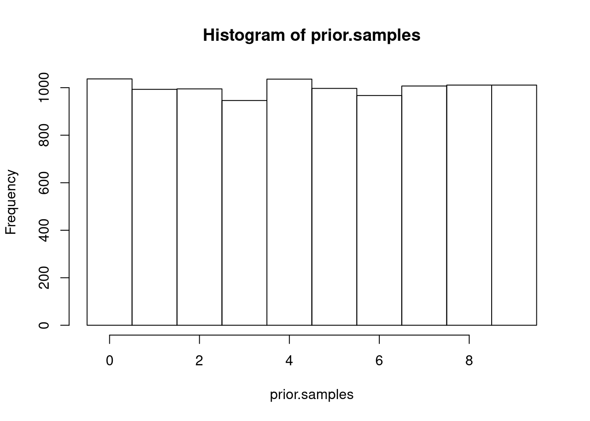
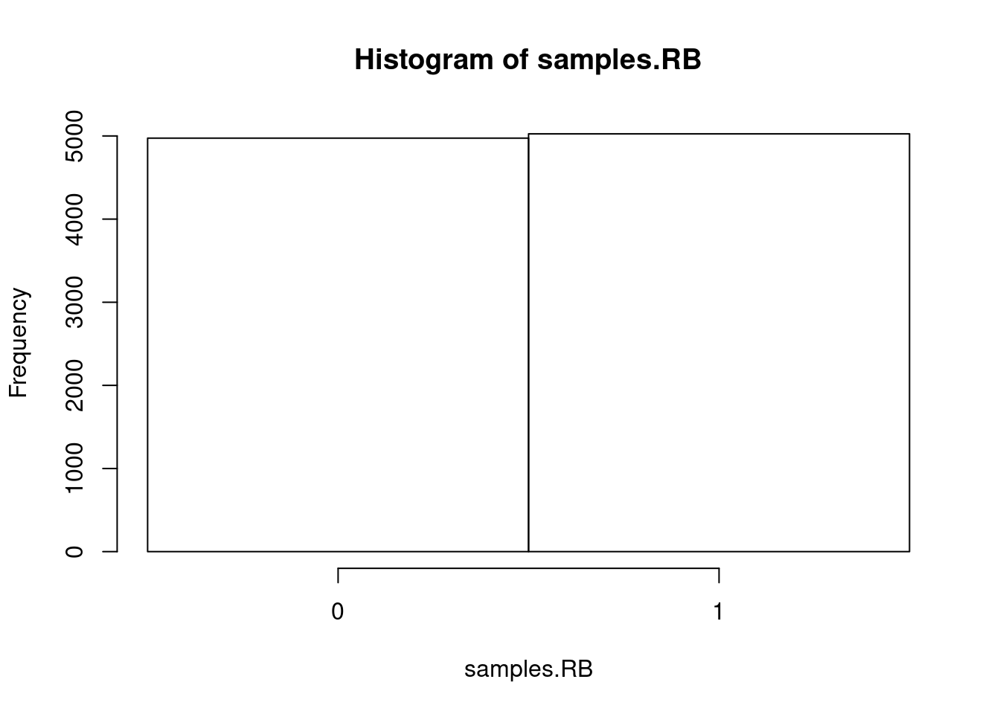
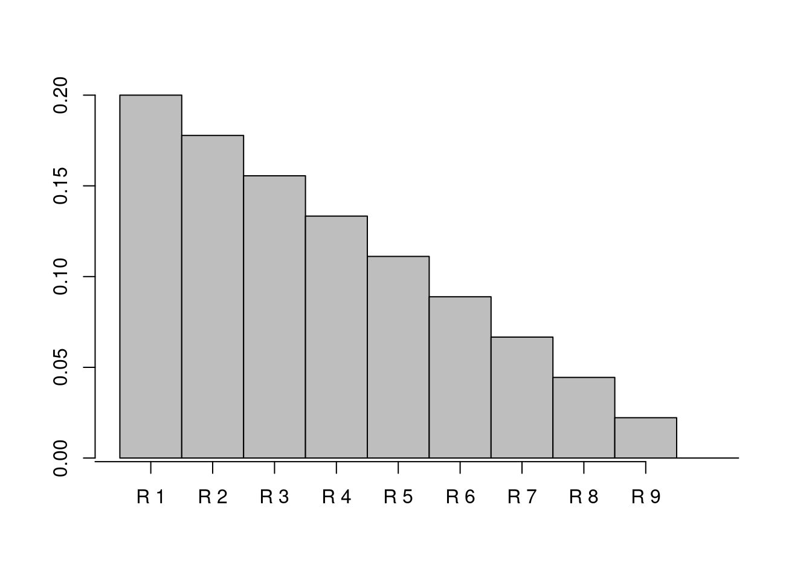
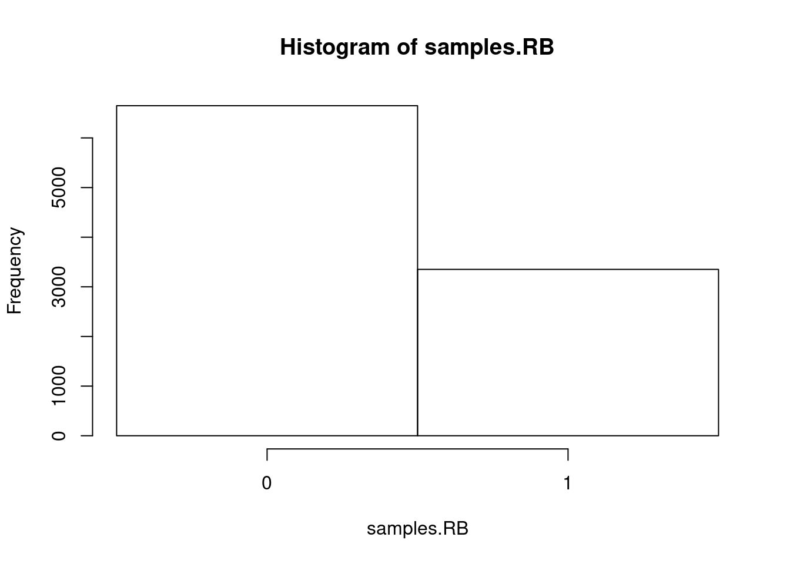

1 Introduction
Reading: Chapter 4 and 5 from Kruschke, John K. 2015. Doing Bayesian Data Analysis: A Tutorial with R, JAGS, and Stan. Edition 2. Boston: Academic Press.
1.1 Bits and pieces of R
Some useful shortcuts for writing markdown:
- ctrl+shift+k: Render in html
- ctrl+alt+i: Insert r cell
- ctrl+shift+enter: Run current code chunk
Various:
- A vector is a series of values of the same type in a given order. We’ll mostly use vectors of integers or floats.
- A matrix is a bunch of numbers arranged in a square (rows and columns).
- Important: we can refer to elements of a matrix by their index, which consists of two numbers. The first number indicates the row of the element, the second number indicates the column.
- You assign a value to a variable with
<-, you check equality with==.
Bits of R that we’re going to use (make sure you understand them):
- c: Combines values into a vector or list
- 1:10: The ‘:’ creates a vector from 1 to 10
- rep: Replicates an element a specified number of times
- print: Prints something
- sample: Samples values from a vector with the given probabilities (given in the
probargument) - head: Shows just the first few values of a vector, or the first few rows of a matrix
- hist: plots an histogram. Useful to get a sense for the distribution of samples.
- rbinom: Repeatedly samples from a binomial distribution. Arguments: rbinom (# observations, # trails/observation, probability of success )
- paste: connects elements in a single string that can be printed.
- sum: sums all the values in a vector / matrix
- for (i in c(1:10)): Loops over
i, withitaking values between 1 and 10 (included). - barplot: Plots a barplot
- cbind: Takes a series of vectors, connects them into a matrix so that each vector is a column.
- colSums: Sums the columns of a matrix.
1.2 A motivating example: Sampling from an urn
Imagine that you have an urn that has black and red balls inside. You can’t see inside the urn and you don’t know how many red and black balls there are, but you know that there is a total of 9 balls. You are interested in how many red balls there are (or, equivalently, how many black balls there are: since you know the total number, knowing one implies the other). The hypotheses are {0 red balls, 1 red ball, 2 red balls, …, 9 red balls }, one for each way that the unknown part of the world could be (the “world” here just means whatever bit of the world we want to model, in this case the urn’s content). Let’s call them respectively R0, R1, R2, etc.
Since you don’t know which hypothesis is true, you have a case of subjective uncertainty (the world is in a certain way, but you don’t know which way it is). Therefore, it is natural to represent your uncertainty with a probability distribution over the possible unknown states that the world could be in, namely our 10 hypotheses: each hypothesis gets a probability, and the probabilities sum to 1. Which probabilities should you give to the hypotheses? Assume that you have no reason for thinking that there is any particular number of red or black balls in the urn. Then, it is natural to give each hypothesis the same probability 1/10 = 0.1, so that we have a uniform distribution over hypotheses (this is called the principle of indifference, which historically has been super important in the development of probability theory. The rabbit hole goes deep). This distribution over hypotheses (the possible ways the the unknown part of the world could be) before we observe any new data is called the prior.
Suppose now you put your hand inside the urn, grab a ball at random, take it out of the urn, and look at it. The possible observations are { black ball, red ball }, call them \(BB\) and \(RB\) respectively. The probability of observing each color depends on which hypothesis is true, i.e. how many balls of each color are in the urn. For instance, if R0 is true (there are 0 red balls in the urn), then the probability of observing a black ball is 1 (\(p(BB|R0)=1.\)), and the probability of observing a red ball is 0 (\(p(RB|R0)=0.\)). The function of hypotheses that gives the probability of some specific observations given the hypothesis is called the likelihood (the likelihood is a bit confusing so don’t worry too much if you don’t get it now, going through examples will make it clearer).
1.2.1 Sampling possible worlds from the generative model
Now we have a distribution over hypotheses, \(p(H)\), and a distribution over observations given each hypothesis, \(p(D|H)\). These two things together are called the generative model, because one thing we can do with them is generate possible scenarios, i.e. a combination of hypothesis and data sampled from that hypothesis. You can generate possible scenarios because prior and likelihood, if you multiply them together, define a joint distribution over hypotheses and observations: \(p(D|H)p(H)=p(D,H)\) (chain rule of probability). So a scenario is a sample from this joint distribution.
How do we sample from the generative model? Since this joint is defined over each combination of \(H\) and \(D\), one option would be to sample directly from the joint distribution. However, there’s a simple way. Note that which hypothesis is true does not depend on the data, while the data depends on which hypothesis is true. Therefore, we can sample from the generative model as follows:
- Sample an hypothesis from the prior.
- Sample from the data given the hypothesis, using the likelihood function.
Let’s first create a vector with the probability of each hypothesis:
## [1] 0.1 0.1 0.1 0.1 0.1 0.1 0.1 0.1 0.1 0.1Let’s use the generative model to generate possible worlds in the urn case. Let’s first create a vector of 10000 hypotheses sampled from the prior:
prior.samples <- sample(0:9,
10000,
replace = TRUE,
# the prob parameter allows to specify the probability
# of each hypothesis.
prob=p.hypotheses)
head(prior.samples)## [1] 1 1 3 7 2 4Here each number corresponds to one hypothesis: 1 corresponds to R1, 2 to R2, etc. You can see each sample as a possible way the unknown part of the world could be. Since the prior was uniform (i.e. each hypothesis had the same probability), each hypothesis appears more or less equally often. Let’s plot this to make sure:
hist(
prior.samples,
# this is to have the x ticks centered below the bars
breaks=seq(min(prior.samples)-0.5, max(prior.samples)+0.5, by=1)
)
Now for each element of prior_samples, we want to sample an observation. To do that, let’s first calculate the probability of the \(RB\) observation for each element of prior_samples. If an element of prior_samples is for instance 2, we want the probability of \(RB\) to be \(2/9\). In general, if the element is \(n\), we want the corresponding probability of \(RB\) to be \(n/9\). We can do this in a simple way with R, exploiting the fact that it intelligently adapts dimensions to each other:
## [1] 0.1111111 0.1111111 0.3333333 0.7777778 0.2222222 0.4444444Finally, we just need to sample one value for each element of p.RB:
## [1] 0 1 1 1 0 0samples.RB is equal to 1 when the observation was RB, and 0 when the observation was not RB (i.e. was BB). Just for sanity, let’s see how many observations of each type we got:
hist(
samples.RB,
breaks=seq(min(samples.RB)-0.5, max(samples.RB)+0.5, by=1),
xaxt='n'
)
axis(1,at=c(0,1))
Since we had a uniform probability over the hypotheses, we had the sample probability of sampling a black or a red ball across all hypotheses. Therefore, as expected, we got more or less the same number of black and red balls when sampling from the generative model.
We have seen how to simulate possible states of the world from your prior+likelihood. However, suppose that we want to go the other way: you make some observations, and you want to update your distribution over hypotheses. In the urn case, suppose you pick one ball at random from the urn, and it’s black. What is the probability of each hypothesis given that observation (\(p(H|BB)\))? We can calculate it using Bayes theorem.
1.3 Bayesian update: Learning from the data
1.3.1 Reminder: Bayes Theorem
As a reminder, this is Bayes theorem: \[\begin{align} \color{violet}{p(H|D)} &= \frac{\color{blue}{p(D|H)}\color{green}{p(H)}}{\color{red}{\sum_{H_i} p(D|H_i)p(H_i)}} \\ &= \frac{\color{blue}{p(D|H)}\color{green}{p(H)}}{\color{red}{p(D)}} \end{align}\] This mostly consists of expressions we have already encountered: \(\color{violet}{\text{posterior}}\), \(\color{blue}{\text{likelihood}}\), \(\color{green}{\text{prior}}\), and \(\color{red}{\text{Bayesian evidence}}\). Let’s go through them once more:
- The posterior is the probability of the hypothesis given the data. This is generally what we are interested in at the end: we see some data, we want to find the probability of each hypothesis given the data.
- The likelihood is the probability of the data given the hypothesis.
- The prior is the probability of the hypothesis prior to seeing any data.
- The evidence is the probability of the data across all hypotheses. Note that it does not depend on the hypothesis, and so the denominator is always the same. Effectively, it works as a normalization constant, in other words it makes sure that the sum of the posterior probability of all hypotheses is 1. The evidence is generally hard to calculate.
Essentially, Bayes theorem is saying that the probability of a hypothesis given some data depends on (1) how likely the hypothesis was to generate the data and (2) how likely the hypothesis was before seeing the data.
1.3.2 Applying Bayes theorem to the urn case
Suppose you are in the urn scenario above, with a uniform prior distribution over the 10 hypotheses. Now you pick a ball and it’s black. Given this observation of BB, how should you change the probabilities you give to each hypothesis? Intuitively, you should now give a little bit more probability to those hypotheses that have more black balls than red balls, because those are the hypotheses that make your observations more likely. Moreover, you can safely exclude hypothesis \(R9\), because your observation would be impossible if \(R9\) were true. Let’s calculate this with Bayes theorem.
The prior is the vector p.hypotheses we defined above. Given that we have observed \(BB\), the likelihood should contain for each hypothesis the probability of the observation given the hypothesis. For \(R0\), the likelihood (\(p(BB|R0)\)) is 1. For \(R1\), 8 out of the 9 balls are black, and therefore \(p(BB|R1)=8/9\). For hypothesis \(n\), the corresponding likelihood is \((9-n)/9\). We can therefore encode the likelihood in the following vector:
## [1] 1.0000000 0.8888889 0.7777778 0.6666667 0.5555556 0.4444444 0.3333333 0.2222222 0.1111111 0.0000000Now suppose we want to find the probability of hypothesis \(R3\) given your observation \(BB\). Let’s apply Bayes theorem:
\[ p(R3 \mid BB) = \frac{p(BB|R3)p(R3)}{\sum_h p(BB|h)p(h)} \]
Let’s calculate the parts we need and use Bayes theorem:
## [1] "p(R3)= 0.1"## [1] "p(BB|R3)= 0.777777777777778"## [1] "p(BB)= 0.777777777777778"## [1] "p(R3|BB)= 0.155555555555556"Now let’s do the same for the other hypotheses, in a more compact way (note that the evidence is the same for all values):
posterior <- c()
for (i in c(1:10)){
p.Ri.given.BB <- p.hypotheses[i] * likelihood[i] / evidence
print(paste('p(R', i, '|BB)=', p.Ri.given.BB))
posterior <- c(posterior, p.Ri.given.BB)
}## [1] "p(R 1 |BB)= 0.2"
## [1] "p(R 2 |BB)= 0.177777777777778"
## [1] "p(R 3 |BB)= 0.155555555555556"
## [1] "p(R 4 |BB)= 0.133333333333333"
## [1] "p(R 5 |BB)= 0.111111111111111"
## [1] "p(R 6 |BB)= 0.0888888888888889"
## [1] "p(R 7 |BB)= 0.0666666666666667"
## [1] "p(R 8 |BB)= 0.0444444444444444"
## [1] "p(R 9 |BB)= 0.0222222222222222"
## [1] "p(R 10 |BB)= 0"Note that, as expected, the posterior over hypotheses now is skewed towards those hypotheses with more black balls!
Just for sanity, check that the posterior sums to 1:
## [1] 1Finally, let’s plot the new posterior:

1.3.3 Implementation detail: How to avoid calculating p(D)
In practice, we generally do not need to calculate the evidence (denominator of Bayes rule) explicitly. When computing a posterior, we will mostly proceed as I am going to explain in this section, which is faster and also allows us to not worry about the denominator.
First, we create a vector of prior probabilities, which has as many component as there are hypotheses. For instance, take the ten hypotheses above, so we can reuse p.hypotheses. Note that they sum to 1, as they should since it is a probability distribution.
# don't worry too much about 'cat'
# if you're curious why not print, try
# to use print(paste('Prior vector: ', p.hypotheses)) instead
cat('Prior vector: ', p.hypotheses)## Prior vector: 0.1 0.1 0.1 0.1 0.1 0.1 0.1 0.1 0.1 0.1Second, we create a likelihood array. When we did calculations above, we only had a vector with the likelihoods for the specific observation we did. However, we would like to have something that encodes the likelihood function for each possible observation given each possible hypothesis, rather than just for a specific observation. The likelihood defines for each hypothesis a distribution over possible observations. This is telling us given each possible way that the world could be, what is the probability of each observation.
Suppose there are 2 possible observations as above, \(BB\) and \(RB\). Then, we can encode the likelihood as an array with shape (# hypotheses, # possible observations), or in this case (10, 2). The likelihood array in the urn case would be:
likelihood.array <- cbind(
c(0:9)/9,
1-(c(0:9)/9)
)
rownames(likelihood.array) <- paste('R',c(0:9),sep='')
colnames(likelihood.array) <- c('RB', 'BB')
print(likelihood.array)## RB BB
## R0 0.0000000 1.0000000
## R1 0.1111111 0.8888889
## R2 0.2222222 0.7777778
## R3 0.3333333 0.6666667
## R4 0.4444444 0.5555556
## R5 0.5555556 0.4444444
## R6 0.6666667 0.3333333
## R7 0.7777778 0.2222222
## R8 0.8888889 0.1111111
## R9 1.0000000 0.0000000Second, we multiply the prior and likelihood vectors together (the nominator of Bayes theorem) element-wise (first element gets multiplied with first element, second element by second element, etc.). That gives us the nominator of Bayes theorem (prior times likelihood):
## RB BB
## R0 0.00000000 0.10000000
## R1 0.01111111 0.08888889
## R2 0.02222222 0.07777778
## R3 0.03333333 0.06666667
## R4 0.04444444 0.05555556
## R5 0.05555556 0.04444444
## R6 0.06666667 0.03333333
## R7 0.07777778 0.02222222
## R8 0.08888889 0.01111111
## R9 0.10000000 0.00000000Finally, note that we want a distribution for each column, i.e. a distribution over hypotheses given each observation. Therefore, we sum each column and then divide each element by the sum of its column:
## RB BB
## R0 0.00000000 0.20000000
## R1 0.02222222 0.17777778
## R2 0.04444444 0.15555556
## R3 0.06666667 0.13333333
## R4 0.08888889 0.11111111
## R5 0.11111111 0.08888889
## R6 0.13333333 0.06666667
## R7 0.15555556 0.04444444
## R8 0.17777778 0.02222222
## R9 0.20000000 0.00000000And that gives us the posterior without us having to explicitly calculate the evidence for each observation!
1.4 If there is time left…
- Calculate the posterior if your observation is \(RB\) instead of \(BB\).
- Calculate the posterior if you have two observations, namely \(BB\) and \(RB\).
1.5 Exercises
- Say that the probability that today is Sunday given that it’s sunny is written \(p(\text{today is Sunday} \mid \text{today is sunny})\). Write expressions for the following:
- Probability that it rains given that the street is wet.
- Probability that the street is wet given that it rains.
- Probability that it rains and the street is wet.
- Suppose that the probability that John is bored is equal to the probability that John is bored given that he is watching a film. What does this imply about the two events (1) John is bored and (2) John is watching a film?
- Suppose there is a disease that affects 0.3% of the population, and a test that correctly identifies the disease 97% of the times (i.e. \(p( \text{test positive} \mid \text{has disease} )=0.97\)).
- Given the probabilities above, can you infer the probability that you have the disease given that the test was positive?
- Given the probabilities above, can you infer the probability that you have the disease given that the test was negative?
- Given the probabilities above, can you infer the probability that you don’t have the disease given that the test was positive?
- Suppose that you had probability 0.4 for hypothesis R0 (in the lab notebook), and all other hypotheses had the same probability.
- Intuitively, what do you think will happen to the distribution of observations?
- Sample 1000 scenarios from the generative model and plot the results.
1.6 Answers
- \(p(\text{it rains} \mid \text{the street is wet})\)
- \(p(\text{the street is wet} \mid \text{it rains})\)
- \(p(\text{it rains & the street is wet})\) or \(p(\text{it rains, the street is wet})\) or \(p(\text{it rains and the street is wet})\)
- It implies that the event John is bored and the event John is watching a film are statistically independent of each other. Formally, \(p(\text{John is bored} \mid \text{John is watching a film}) = p(\text{John is bored})\) and \(p(\text{John is watching a film} \mid \text{John is bored}) = p(\text{John is watching a film})\). This does not imply that either event has happened or is happening, and it does not imply that the two events are equally probable.
- The solution would be simply an application of Bayes theorem: \[ P(\text{disease} \mid \text{positive}) = \frac{P(\text{positive} \mid \text{disease})P(\text{disease})} {P(\text{positive} \mid \text{disease})P(\text{disease}) + P(\text{positive} \mid \text{no disease})P(\text{no disease})} \] You have \(P(\text{no disease})=0.7\), \(P(\text{disease}) = 0.3\), \(P(\text{positive} \mid \text{disease})=0.97\), and \(P(\text{negative} \mid \text{disease}) = 0.03\). What you don’t have is \(P(\text{positive} \mid \text{no disease})\). Therefore, one acceptable answer was: This cannot be calculated with the information given in the exercise. This exercise was to some extent a trick question, but given that nobody answered it this way I am going to assume that you are not used to this type of question and I won’t ask one again. Another acceptable answer was to assume that \(P(\text{positive} \mid \text{no disease})=0\). In that case: \[ P(\text{disease} \mid \text{positive}) = \frac{0.97 \times 0.3}{0.97 \times 0.3 + 0 \times 0.7} = 1. \] This makes intuitive sense: under this assumption the test is positive only when there is a disease, so if it is positive there is a disease.
- This is asking for \(P(\text{disease} \mid \text{negative}) = \frac{P(\text{negative} \mid \text{disease})P(\text{disease})}{P(\text{negative} \mid \text{disease})P(\text{disease}) + P(\text{negative} \mid \text{no disease})P(\text{no disease})}\). The answer is that you cannot calculate it, because you don’t have the necessary bits for applying Bayes theorem. Again, I accepted answers that assumed \(P(\text{positive} \mid \text{no disease})=0\), in which case \(P(\text{negative} \mid \text{no disease})=1\), and so: \[ P(\text{disease} \mid \text{negative}) = \frac{0.03 \times 0.3}{0.03 \times 0.3 + 1 * 0.7} = \frac{0.009}{1.009} \approx 0.009 \]
- \(P(\text{no disease} \mid \text{negative}) = 1 - P(\text{disease} \mid \text{negative})\). Since you can’t calculate \(P(\text{disease} \mid \text{negative})\), you can’t answer this question. Again, under the assumptions that \(P(\text{positive} \mid \text{no disease})=0\), \(P(\text{no disease} \mid \text{negative}) \approx 0.999\).
- R1 will have a higher probability than the other observations, while all the other observations will have the same probability as each other. Since R1 has 0 red balls, there is going to be overall more blue balls than red balls in the sampled observations.
- Following code:
# only change is here
p.hypotheses <- c(0.4, rep(0.6/9,9))
# Same code as above
prior.samples <- sample(0:9,
10000,
replace = TRUE,
# the prob parameter allows to specify the probability
# of each hypothesis.
prob=p.hypotheses)
p.RB <- prior.samples / 9
samples.RB <- rbinom(
n=length(p.RB),
size=1,
prob=p.RB
)
hist(
samples.RB,
breaks=seq(min(samples.RB)-0.5, max(samples.RB)+0.5, by=1),
xaxt='n'
)
axis(1,at=c(0,1))